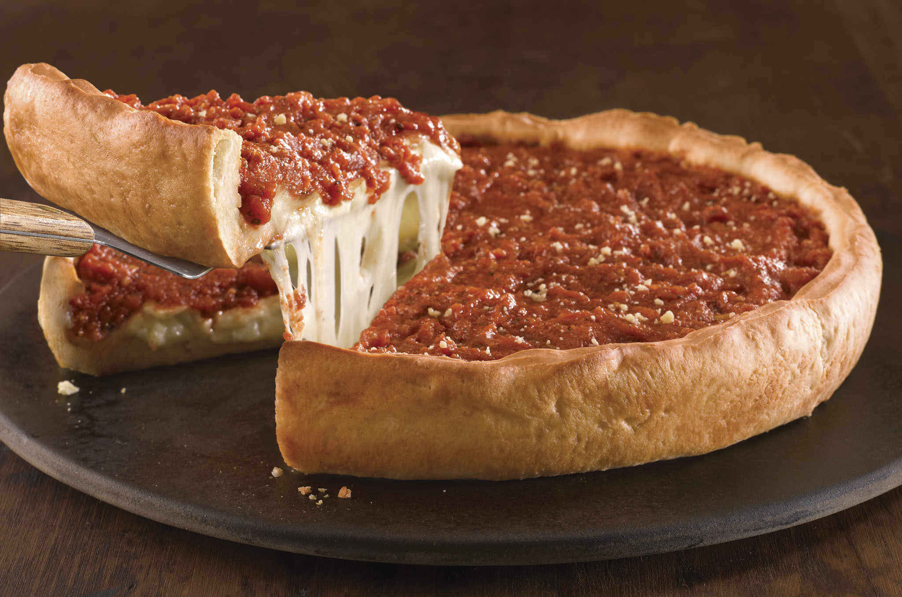
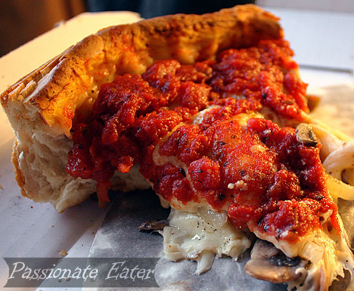
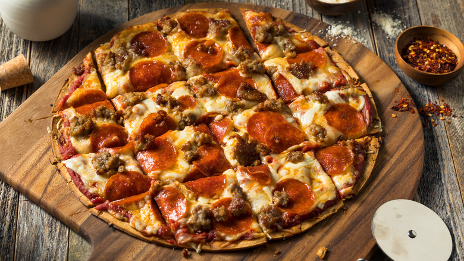
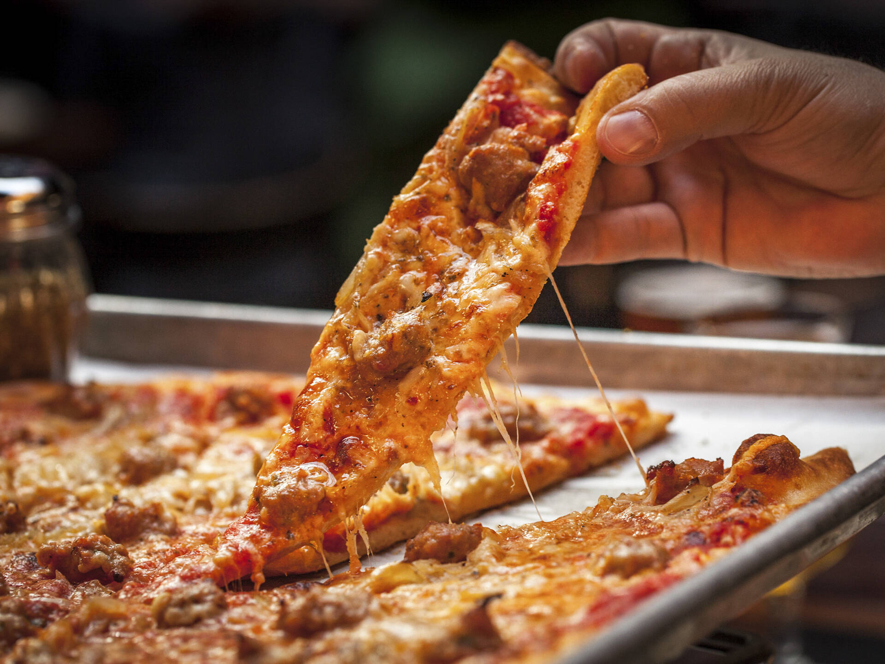

Overview
While deep-dish is the world-famous postcard of Chicago, tavern-style is the city’s
true daily bread. This storied rivalry isn't just about thickness; it’s a battle
between a culinary “main event” and a social “bar snack.”
Deep-Dish: The Knife-and-Fork Giant
The History
Born in 1943 at Pizzeria Uno, deep-dish was created
by Ike Sewell and Ric Riccardo to transform pizza from a light appetizer into a filling,
stand-alone meal. It reshaped Chicago’s food identity forever.
What Makes It Unique
- The Build: Constructed “upside down” — cheese on the bottom, toppings in the middle, crushed tomato sauce on top.
- The Crust: Buttery, flaky, golden, and closer to a savory pie crust than bread.
- The Experience: A sit-down, knife-and-fork meal that takes time and appetite.


Top Recommended Spots
Top Recommended Spots
-
Pequod’s Pizza (Lincoln Park):
Famous for its caramelized halo of burnt cheese around the edge.
-
Lou Malnati’s:
Known for the Buttercrust and lean, high‑quality sausage patties.
-
Pizzeria Uno/Due (River North):
The historic birthplace of deep‑dish; essential for purists.
-
Giordano’s:
The king of stuffed pizza, featuring a second thin layer of dough under the sauce.
Tavern-Style: Chicago’s Everyday Slice
The History
Emerging in the 1930s and 40s (notably at spots like
Vito & Nick’s and Home Run Inn), this style was designed
for South Side bars. Owners wanted a snack that encouraged drinking without filling patrons
up too quickly—easy to eat with one hand while holding a beer in the other.
What Makes It Unique
- The "Party Cut": Instead of wedges, tavern-style is cut into small squares.
The tiny corner pieces are the most coveted for their extra crunch.
- The Crust: Rolling pins squeeze the air out of the dough, creating a
cracker-thin, ultra-crispy base that never sags under toppings.
- The Toppings: Spread edge-to-edge, leaving almost no bare crust.


Top Recommended Spots
-
Vito & Nick’s (Ashburn):
The gold standard. Family-owned since 1923; cash only and proudly old-school.
-
Pizz’amici (West Town):
A newer heavyweight (ranked highly in 2025/2026) using fermented sourdough for a modern twist.
-
Barnaby’s of Northbrook:
Famous for its crimped edges and nostalgic, wood‑paneled atmosphere.
-
Pat’s Pizza (Lincoln Park):
Frequently cited by locals as the thinnest, crispest crust in the city.